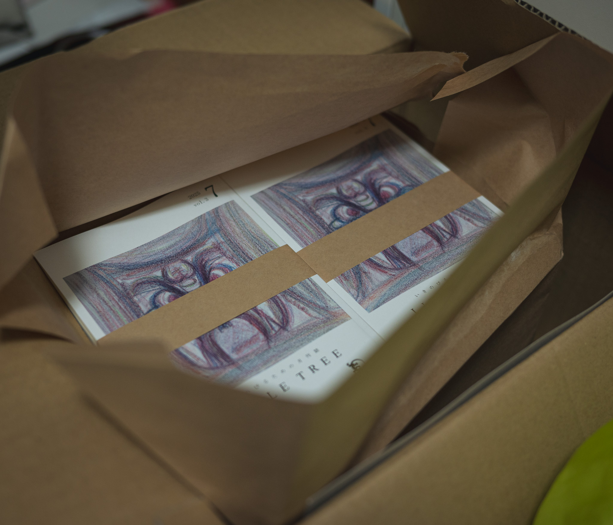
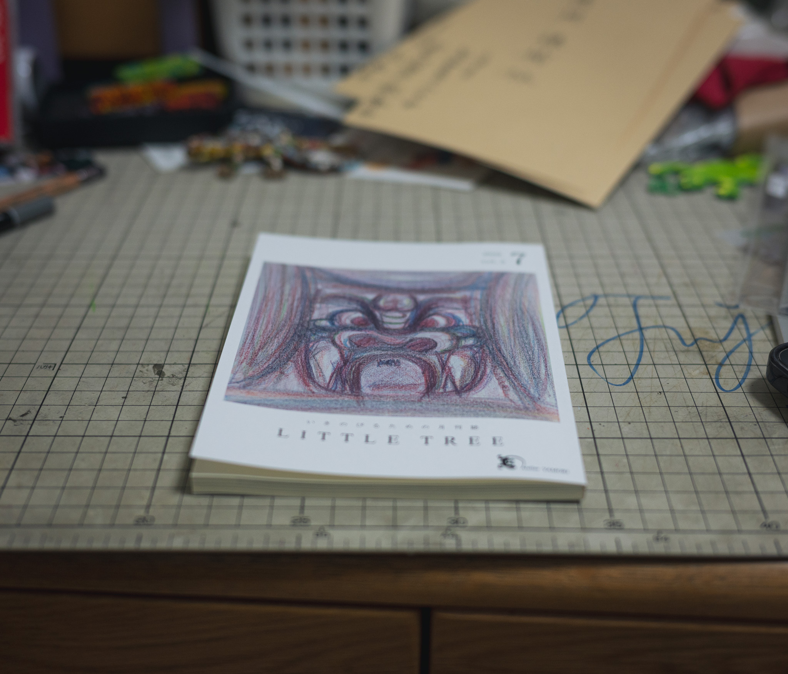
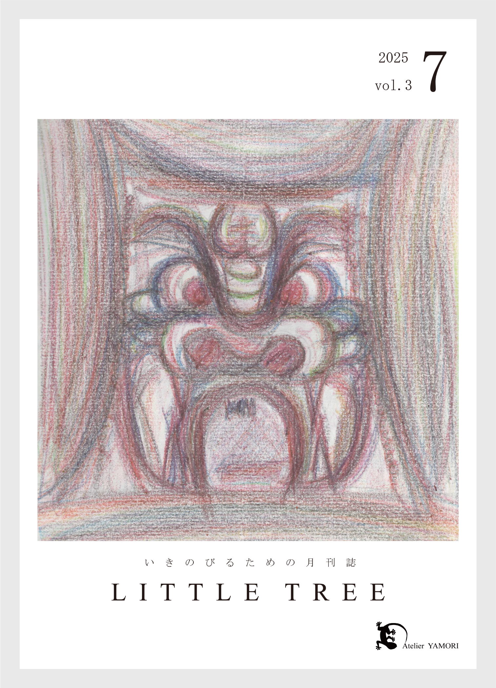
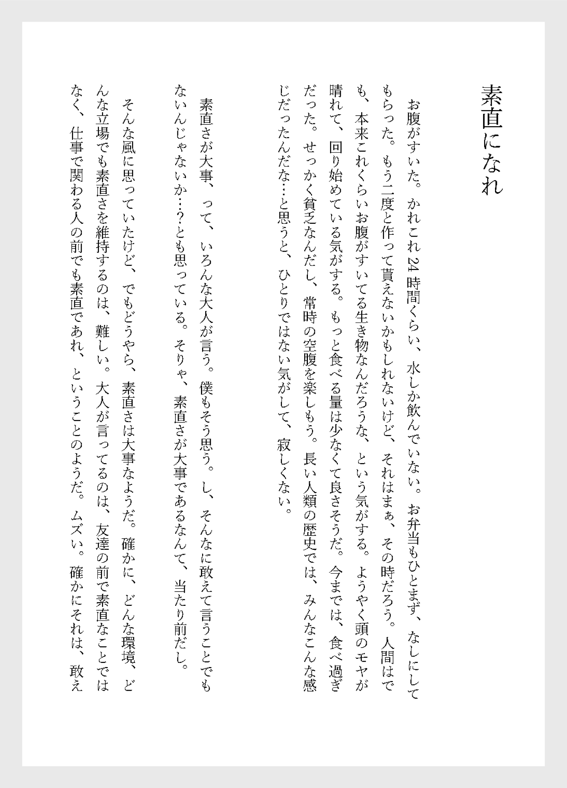
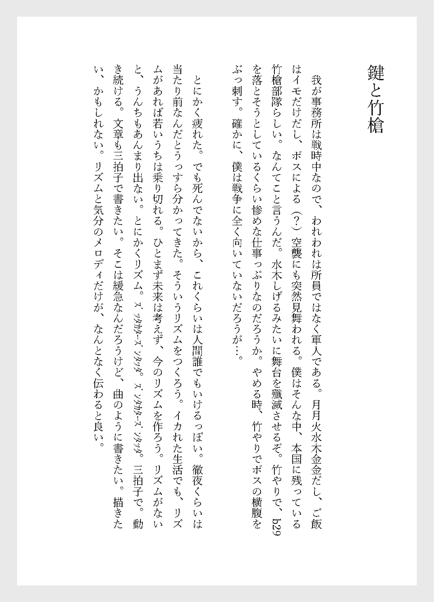
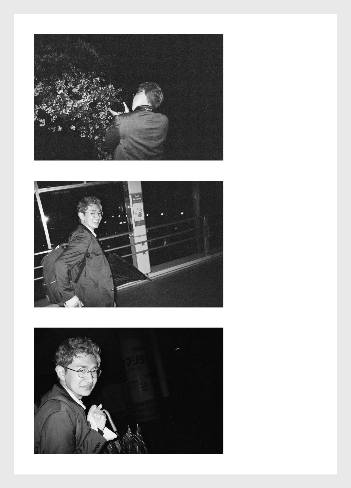
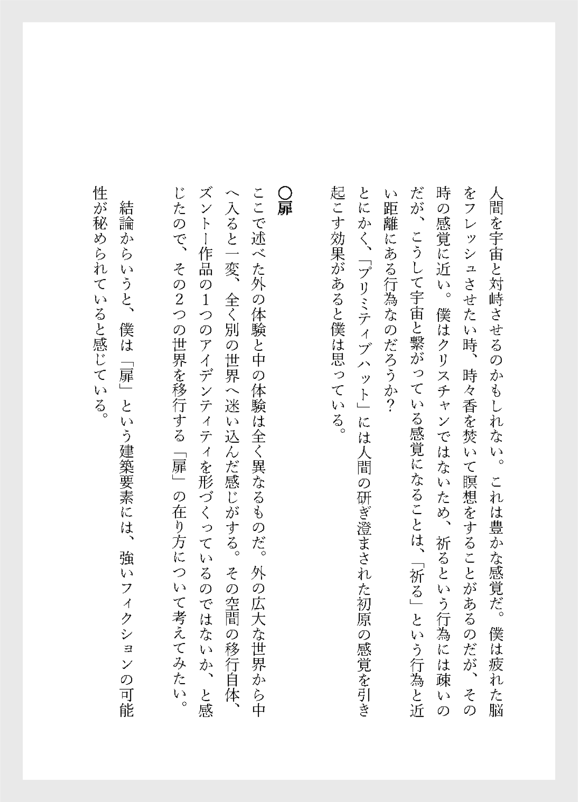
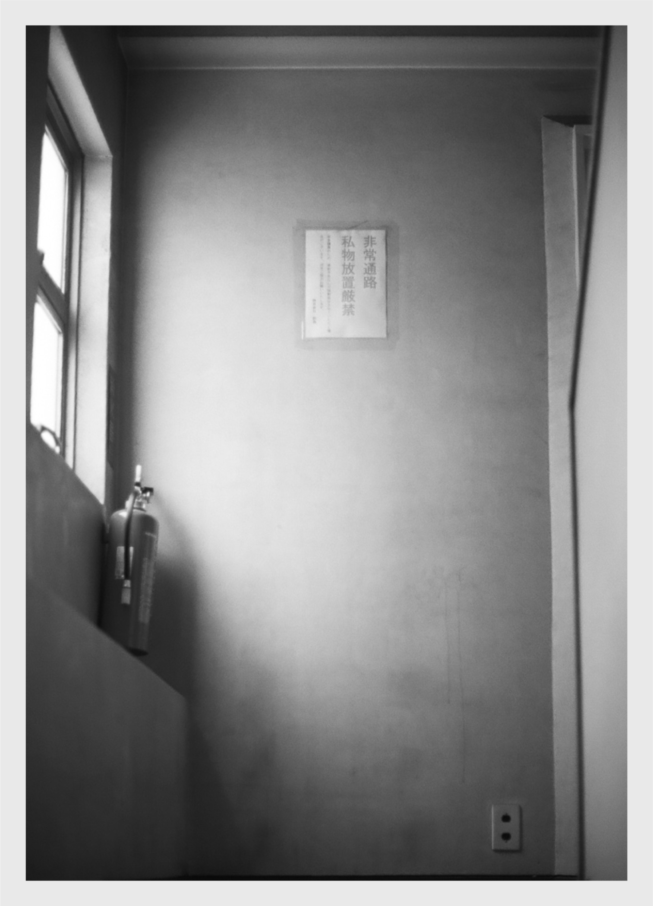

LITTLE TREE vol.3
2025年7月号。このあたりになると、もう喜びも悲しみもなく、破壊された精神をまだ辛うじて生きている肉体に放り込んで、毎日を過ごしていた。
夏になり木々が緑々しさを増し、蝉も盛んに鳴いている中、干からびた僕は音のない世界を彷徨っていた。せっかく思い出してもこんな感じの、悲しい文章しかでてこない。
近畿支部の発表で久しぶりに研究室の人達に会い、四回生に雑誌を無理やり買わせたりして、発刊数を45部くらいまで伸ばした。
普通に良くないことをした気がする。ごめんなさい。買い続けている人たちには、はち切れんばかりの感謝を。本当にありがとう。
本当にお陰で生きのびることができました。
編集：舟木健太郎
執筆：舟木健太郎 | 丁子紘亘
表紙：舟木健太郎
発行：Atelier YAMORI







